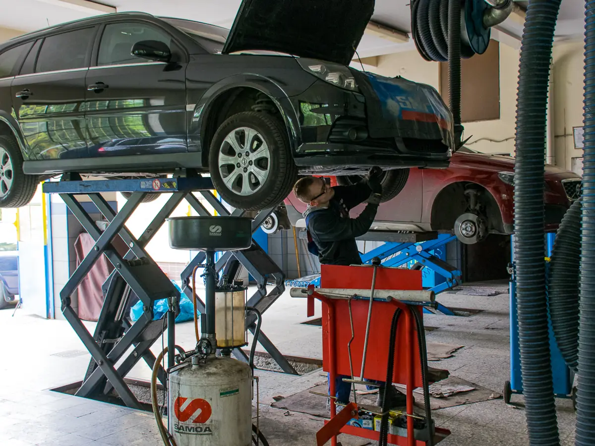

Przeglądy i serwis okresowy
Wymiana oleju i filtrów, kontrola układów według zaleceń producenta.
Każdą wizytę zapisujemy w naszej bazie danych, więc przy kolejnym przeglądzie znamy historię Twojego auta i wiemy, co warto zaplanować.
od 350 zł